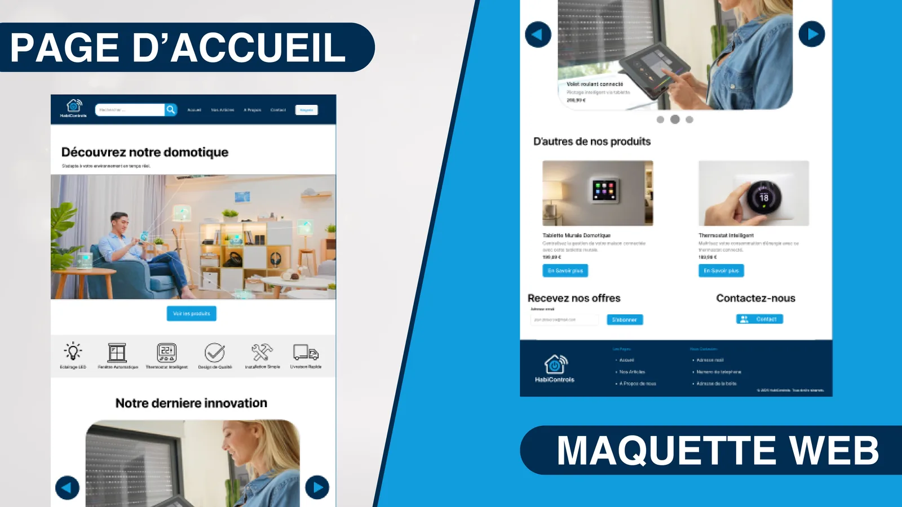
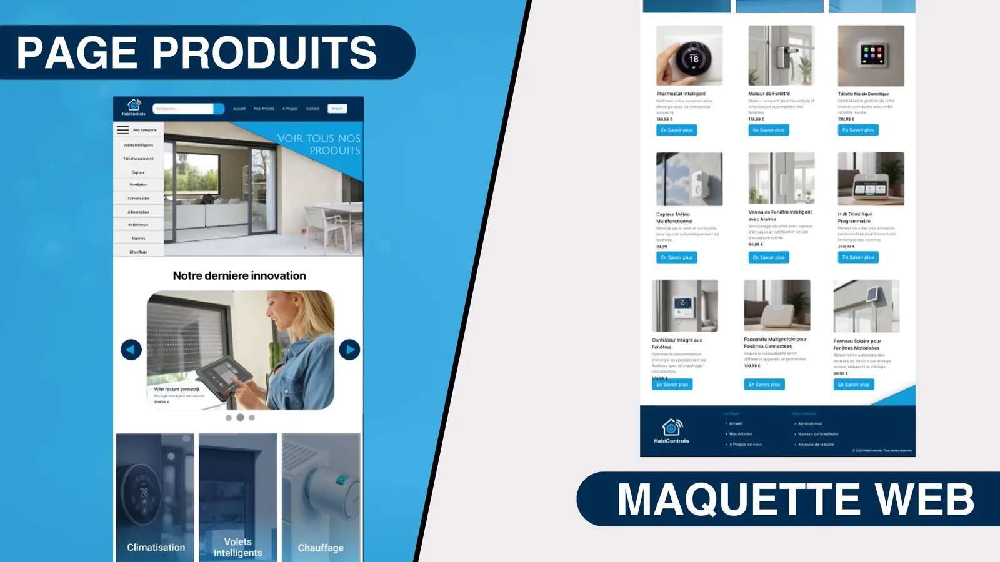
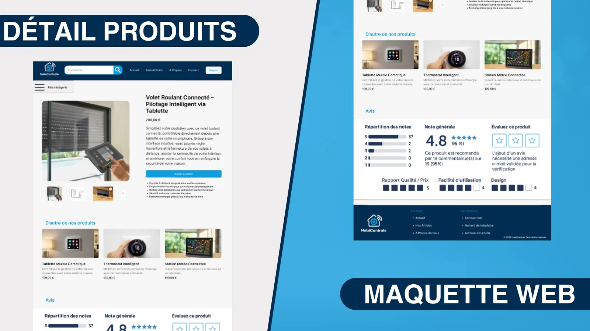
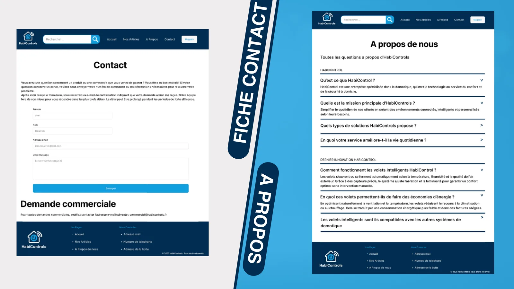
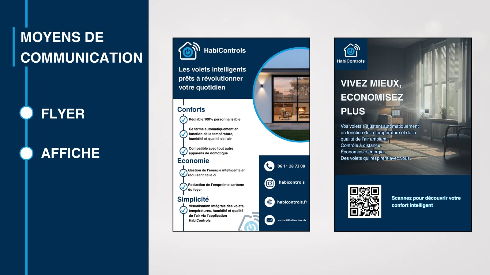
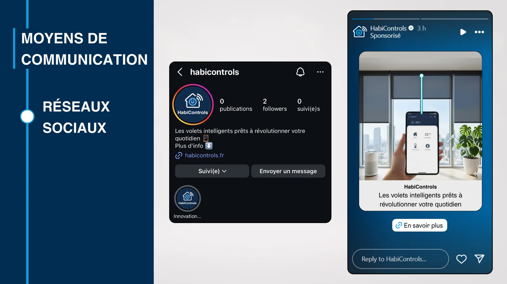
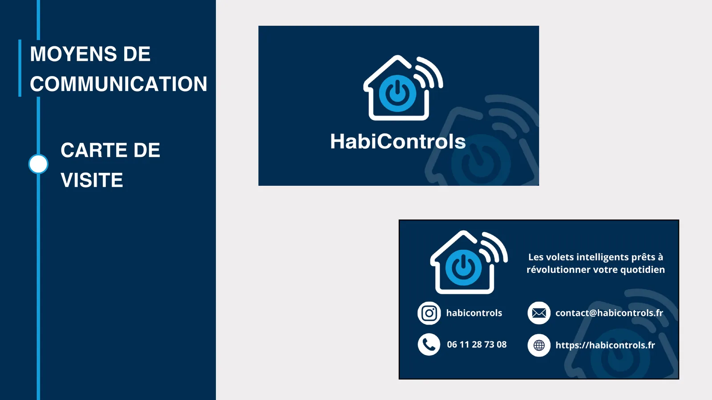
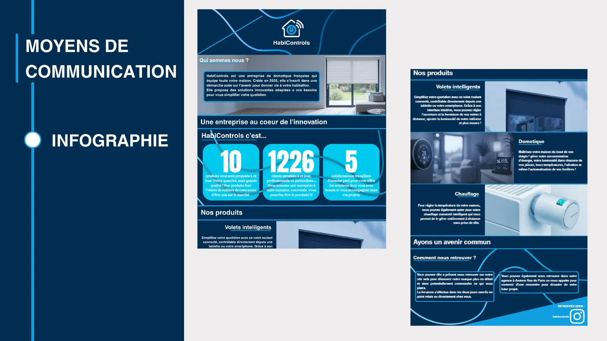
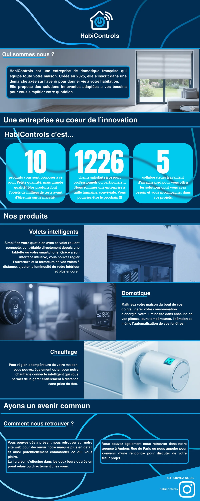

Créer une entreprise de domotique de toutes pièces : son positionnement, son identité visuelle, son site web et sa communication. Le seul projet de mon BUT où j'ai tenu la chaîne complète, du concept au support imprimé.
La consigne tenait en une phrase : proposer une innovation, et la défendre comme une vraie marque. Nous sommes partis d'un constat domestique : on ouvre et on ferme ses volets au jugé, alors que la température, l'humidité et la qualité de l'air, elles, se mesurent.
D'où HabiControls, entreprise française de domotique, et son produit phare : des volets et fenêtres qui s'ouvrent et se ferment seuls selon les conditions ambiantes, couplés à un purificateur et à une ventilation. Avant de dessiner quoi que ce soit, nous avons passé le concept au filtre d'une analyse SWOT. C'est elle qui a orienté tout le discours de marque qui a suivi.
Le nom devait dire à la fois l'habitat et le contrôle. Pour la couleur, nous voulions que le bleu porte l'idée de pilotage à distance : une gamme allant du bleu profond, pour l'assise et les aplats, au bleu franc réservé aux éléments d'action. Helvetica pour la typographie : neutre, lisible en petit corps sur une carte de visite comme en très grand sur une affiche.
#002D51
#004B80
#0066A3
#F8F8F8
Cette palette et cette typographie ont ensuite servi de contrainte à tout le reste : le site, l'affiche, le flyer, la carte de visite et l'infographie sortent tous du même jeu de quatre couleurs.
Quatre écrans dessinés sous Figma, pensés comme un vrai site marchand : parcours d'entrée, catalogue filtrable, fiche produit avec avis, et pages froides.

Une accroche produit, une bande de six arguments illustrés, puis un carrousel « dernière innovation ». La page se termine sur l'inscription à la newsletter et le contact.

Filtrage par catégorie dans une colonne latérale, trois univers mis en avant (climatisation, volets, chauffage) puis la grille produit avec prix et accès à la fiche.

Galerie de vignettes, argumentaire, produits associés, et un bloc d'avis détaillé : répartition des notes, moyenne, et notation par critère (rapport qualité-prix, facilité d'utilisation, design).

Une FAQ en accordéon qui répond aux objections concrètes (économies réelles, compatibilité avec d'autres systèmes), et un formulaire séparé des demandes commerciales.
Le site ne suffisait pas : il fallait montrer que l'identité tenait debout sur des formats très différents, du print A3 au format vertical des réseaux sociaux.

Le flyer déroule l'argumentaire en trois blocs (confort, économie, simplicité). L'affiche fait l'inverse : une seule promesse, « Vivez mieux, économisez plus », et un QR code. Deux registres pour deux contextes de lecture.

Un profil de marque et une story sponsorisée mise en situation. Le format vertical impose de tout redire en une image et une phrase. C'est l'exercice le plus contraignant de la série.

Recto logo, verso coordonnées. C'est le support qui teste vraiment une identité : à cette taille, il ne reste que le logo, la couleur et la hiérarchie de l'information.

Une page qui présente l'entreprise : son histoire, ses trois familles de produits et ses chiffres clés. Le support le plus dense, et celui qui a demandé le plus d'arbitrages de mise en page.

Mon rôle dans l'équipe : nous étions cinq (Clément Berger, Léo Fernandez, Jay L'Héronde, Théo Marti et moi). Plutôt que de me concentrer sur une spécialité, je suis intervenu sur l'ensemble des livrables : l'analyse SWOT, la charte graphique, la maquette Figma et les supports de communication.
C'est le projet où j'ai le moins écrit de code et le plus appris sur la conception. Décider d'une palette avant de dessiner, puis s'y tenir sur huit supports différents, oblige à une rigueur qu'on n'a pas quand on improvise écran par écran. La contrainte du petit format, celle de la carte de visite ou de la story, est celle qui m'a le plus servi : elle ne pardonne aucune hiérarchie floue.
Le projet s'est terminé par une soutenance où il fallait défendre le positionnement autant que les visuels. Savoir expliquer pourquoi ce bleu et pourquoi cette accroche s'est révélé aussi important que de les avoir produits.